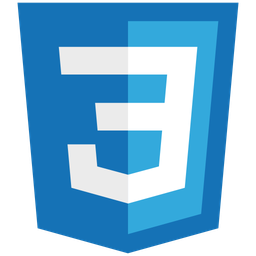

HTML5
Textos, Listas, Imagens, Vídeos, Links, Tabelas, Divisões, Formulários, SEO, Acessibilidade e Semântica

CSS3
Seletores, Cores, Fundos, Estilização de Textos e Listas, Bordas, Espaçamentos, Tamanhos, Efeitos Visuais e Interações, Posicionamento, Pseudo-classes, Pseudo-elementos, Layout Responsivo com Flexbox, Grid Layout e Media Query
JavaScript
Variáveis, Escopo, Contexto, Tipos de Dados, Funções, Operadores, Funções Matemáticas, Estrutura de Dados, DOM, Callbacks, Arrow Functions, Closures, POO, Manipulação de Dados, Assincronismo (Promises, Async/Await, Try/Catch), API
React
SPA, JSX, Componentes, Props, Hooks(useState, useEffect), Controlled Component, Manipulação de Arrays no Estado, Imutabilidade, Key em Listas, UUID, React Router DOM, Rotas Dinâmicas, localStorage, Consumir API, Tailwind CSS, Spread Operator
Node.js
Módulos Nativos (FS, HTTP, PATH), Módulos Locais, Módulos de Terceiros, Express.js, Middleware, Rotas, Métodos HTTP, Variáveis de Ambiente, MongoDB, Mongoose, Schema, Model, EJS e NPM
Outros tópicos de programação
Fundamentos da Internet e Web, Algoritmos e Estrutura de Dados e Lógica de Programação
Habilidades Pessoais
Comunicação, Organização, Proatividade, Adaptabilidade e Trabalho em equipe